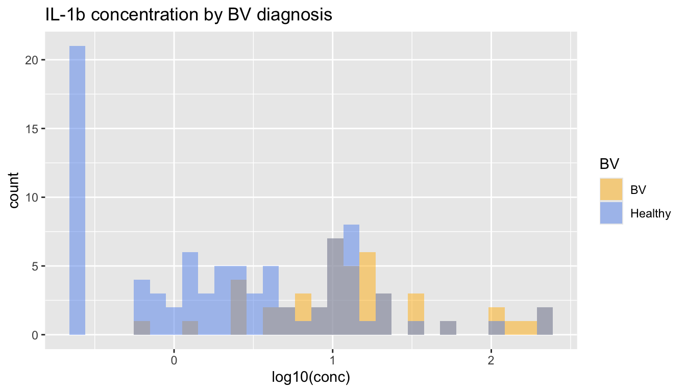

Hypothesis testing, data transformation, compositional data
Code
library(tidyverse) # loads the packages from the tidyverse suitelibrary(pander) # allows to display pretty tables library(patchwork) # allows to combine ggplot (see Module 7)theme_set(theme_light())set.seed(123) # set the "random seed" for reproducibility
Hypothesis testing
Before testing hypotheses on real data, let’s develop our intuition on data we simulate ourselves.
For this first example, let’s simulate 3 datasets by sampling 50 values from 2 normal populations with different means but same variance (So two datasets are drawn from population 1 and one is drawn from population 2). Let’s use \(\mu_1 = 0\), \(\mu_2 = 2\), and \(\sigma^2 = 4\).
To simulate normally distributed data, check the rnorm function by typing ?rnorm in the console.
We put the results of our simulations in a variable X that will be a “long” tibble with the following two columns: dataset, value.
Code
n_samples <-50common_sd <-2# square root of 4 (we said)sample_1 <-rnorm(n_samples, mean =0, sd = common_sd) sample_2 <-rnorm(n_samples, mean =0, sd = common_sd) sample_3 <-rnorm(n_samples, mean =2, sd = common_sd)X <-bind_rows(tibble(dataset =1, value = sample_1),tibble(dataset =2, value = sample_2),tibble(dataset =3, value = sample_3) ) |>mutate(dataset = dataset |>factor())
If we display the top 6 raws, we have:
Code
# the head function takes the top x rows of a table# by default, the first 6 rows# pander just prints the result in a pretty wayX |>head() |>pander()
dataset
value
1
-1.121
1
-0.4604
1
3.117
1
0.141
1
0.2586
1
3.43
and the bottom 6 raws are:
Code
# tail prints the last 6 rowsX |>tail() |>pander()
dataset
value
3
-1.203
3
0.9382
3
-0.9235
3
3.376
3
6.2
3
-0.5741
To validate that we’ve simulated our data properly, let’s compute the mean and variance of our data and display a histogram for each dataset.
Code
X %>%group_by(dataset) %>%summarize(mean =mean(value), var =var(value)) |>pander()
dataset
mean
var
1
0.06881
3.429
2
0.2928
3.279
3
1.492
3.915
Do these values make sense?
We can display the distributions we just simulated using ggplot and geom_histogram.
Code
ggplot(X, aes(x = value, fill = dataset)) +geom_histogram(bins =50) +facet_grid(dataset ~ ., labeller = label_both) +guides(fill ="none") +# we don't really need a fill legend theme(strip.text.y =element_text(angle =0, hjust =0)) # sometimes it is nicer to rotate the panel labels so they are horizontal and more easily readable
Visually, it looks like the means of datasets 1 and 2 are similar, but the mean of dataset 3 is larger (expected based on how we simulated the data). However, because there is large variability in the data and a lot of overlap between the values of these datasets, we want to make sure that what we think we observe is not due to chance.
This what statistical tests help us do. Feel free to review the workshop slides if you need a reminder of what statistical tests are.
Here, we want to do a test on the means of the datasets and test if the means of datasets 2 or 3 are different from the mean of dataset 1.
\(t\)-tests
Because we have more than 40 samples in each dataset, we can use a \(t\)-test.
In R, \(t\)-tests can be done with the t.test function. Note that there are several ways to use the t.test function and several options we need to be careful about. To read more about these options, type ?t.test in your console.
Specifically, we need to be careful about specifying what our Null and alternative hypotheses are.
This is specified using the alternative option of the t.test function.
is alternative = "two-sided" which is the default option of t.test (that is, if we don’t specify the alternative, the function automatically assumes that we want to perform a “two-sided” test). It is "two-sided" because \(\mu_2\) can be smaller OR larger in the alternative hypothesis.
Let’s say that we do not have any a priori on the alternative and perform a two-sided test on the means of datasets 1 and 2.
Code
t.test(value ~ dataset, data = X |>filter(dataset %in%1:2))
Welch Two Sample t-test
data: value by dataset
t = -0.61157, df = 97.951, p-value = 0.5422
alternative hypothesis: true difference in means between group 1 and group 2 is not equal to 0
95 percent confidence interval:
-0.9508970 0.5028781
sample estimates:
mean in group 1 mean in group 2
0.0688071 0.2928165
Code
# this is the same as :# t.test(x = X$value[X$dataset == 1], y = X$value[X$dataset == 2])
We see that the probability to observe the \(t\) value is quite large. So, we do NOT reject the null hypothesis that the two means are the same.
Now, if we do this test comparing the means of datasets 1 and 3, what do we get? What do you conclude?
Code
t.test(value ~ dataset, data = X |>filter(dataset %in%c(1,3)))
Welch Two Sample t-test
data: value by dataset
t = -3.714, df = 97.572, p-value = 0.0003399
alternative hypothesis: true difference in means between group 1 and group 3 is not equal to 0
95 percent confidence interval:
-2.1839829 -0.6628012
sample estimates:
mean in group 1 mean in group 3
0.0688071 1.4921991
As explained above, the tests we have done so far are “two-sided”. That means that the null hypothesis is that the two means are the same, and the alternative is that they are different.
\[
H_0: \mu_1 = \mu_2
\]
\[
H_a: \mu_1 \neq \mu_2
\]
But sometimes, we have an a priori that the alternative is that one of the two means is larger. This is where we need a “one-sided” test.
We do this in R with the alternative option of the t.test function.
Remember: to obtain the documentation about the t.test function, you can type ?t.test in the console.
How do we need to change the alternative option to perform the test corresponding to this pair of hypotheses ?
t.test(value ~ dataset, data = X |>filter(dataset %in%c(1,3)),alternative ="less")
Welch Two Sample t-test
data: value by dataset
t = -3.714, df = 97.572, p-value = 0.0001699
alternative hypothesis: true difference in means between group 1 and group 3 is less than 0
95 percent confidence interval:
-Inf -0.7869575
sample estimates:
mean in group 1 mean in group 3
0.0688071 1.4921991
How do the \(t\) and \(p\) values compare in the two-sided vs one-sided test?
Why?
QQ-plots: checking compatibility with a (normal) distribution
Remember that the \(t\)-test requires, for small sample sizes, for the data to be drawn from a normal distribution. Usually, with real data, we don’t always know what distribution the data are samples from.
We can always check that our data is compatible with a normal distribution by performing a QQ-plot:
Code
example_data <-tibble(norm =rnorm(20), lnorm =rlnorm(20))# just like `rnorm` samples from a normal distribution, # `rlnorm` samples from a log-normal distributiong_norm <-ggplot(example_data, aes(sample = norm)) +geom_qq() +geom_qq_line() +ggtitle("Sampled from a\nnormal distribution")g_lnorm <-ggplot(example_data, aes(sample = lnorm)) +geom_qq() +geom_qq_line() +ggtitle("Sampled from a\n*log*normal distribution")g_norm + g_lnorm
We see that, on the left plot, the dots are close to the line, and on the right plot, some dots are very far from the line. These dots far from the line are a warning that the distribution is probably not normal.
Impact of sample size on p-values
Small dataset
Let’s re-do our analysis but decrease the sample size to 10 samples per dataset.
Code
# another way to simulate data is to do the following# check what the expand_grid and rowwise function doX_small_sample <-expand_grid(dataset = (1:3) |>factor(), sample =1:10 ) %>%mutate(pop_true_mean =ifelse(dataset ==3, 2, 0),pop_true_var =2 ) %>%rowwise() %>%mutate(value =rnorm(1, mean = pop_true_mean, sd =sqrt(pop_true_var)) ) %>%ungroup()X_small_sample |>head() |>pander()
We can still use a \(t\)-test because we know that our samples are drawn from a Normal distribution.
Code
t.test(value ~ dataset, data = X_small_sample |>filter(dataset %in%c(1,3)))
Welch Two Sample t-test
data: value by dataset
t = -3.2548, df = 17.988, p-value = 0.004402
alternative hypothesis: true difference in means between group 1 and group 3 is not equal to 0
95 percent confidence interval:
-3.4653702 -0.7465168
sample estimates:
mean in group 1 mean in group 3
-0.377852 1.728091
We see that the \(p\)-value is now much larger because, with the small datasets, we have a lot more uncertainty on the true means of the populations.
Large datasets
Let’s now redo the same again but with a very large sample size for each dataset. For example N = 1000.
t.test(value ~ dataset, data = X_large_sample |>filter(dataset %in%c(1,3)))
Welch Two Sample t-test
data: value by dataset
t = -30.732, df = 1997.9, p-value < 2.2e-16
alternative hypothesis: true difference in means between group 1 and group 3 is not equal to 0
95 percent confidence interval:
-2.075287 -1.826308
sample estimates:
mean in group 1 mean in group 3
0.03031352 1.98111096
The \(p\)-value is as small as it can be.
Let’s also re-do the test comparing datasets 1 and 2
Code
t.test(value ~ dataset, data = X_large_sample |>filter(dataset %in%c(1,2)))
Welch Two Sample t-test
data: value by dataset
t = 0.075717, df = 1996.9, p-value = 0.9397
alternative hypothesis: true difference in means between group 1 and group 2 is not equal to 0
95 percent confidence interval:
-0.1186693 0.1282006
sample estimates:
mean in group 1 mean in group 2
0.03031352 0.02554787
We still don’t reject the null hypothesis, which is what we expect.
Clinical vs Statistical significance
However, sometimes, we need to be careful with large sample sizes because tiny effects can still lead to very small p-values. However, these tiny effects don’t have much but these do not have much clinical relevance.
Let’s verify that with a difference in means of 0.2
Code
t.test(x =rnorm(1000, mean =0.0, sd =2),y =rnorm(1000, mean =0.2, sd =2))
Welch Two Sample t-test
data: rnorm(1000, mean = 0, sd = 2) and rnorm(1000, mean = 0.2, sd = 2)
t = -2.18, df = 1998, p-value = 0.02937
alternative hypothesis: true difference in means is not equal to 0
95 percent confidence interval:
-0.36547886 -0.01931448
sample estimates:
mean of x mean of y
-0.02210611 0.17029056
The \(p\)-value is lower than 1/20, but the effect (i.e., the mean in differences), compared to the standard deviations is very small.
This is what we are talking about when discussing the “clinical” vs “statistical” significance.
Data transformation
Now, let’s play with the datasets provided on the workshop website. Specifically, we are interested in analyzing the cytokines data.
Cytokine data exploration
Our first task will be to display the distribution of the “IL-1\(\beta\)” cytokine.
To do so, we load the cytokine data and filter for the cytokine of interest.
Code
# notice where I had stored my files.# Make sure to modify the path to your fileselisa <-read_csv(file ="data/03_elisa_cytokines_UKZN_workshop_2023.csv",show_col_types =FALSE )IL1b <- elisa |>filter(cytokine =="IL-1b")
We display its distribution with the geom_histogram function, and we can use the color (fill) option to flag whether the concentration value was within or out of the limits of detection.
Code
cytokine_lim_cols <-c("within limits"="navy", "out of range"="indianred1")ggplot(IL1b, aes(x = conc, fill = limits)) +geom_histogram(bins =30) +ggtitle("IL-1b concentrations") +scale_fill_manual(values = cytokine_lim_cols)
What do we observe?
Do we think that the distribution of IL-1\(\beta\) concentations follow a normal distribution?
Look back at the QQ-plots we did earlier on simulated data. Does this QQ-plot look like one of the simulated one?
Log-transformation
Let’s now repeat the last two displays, using the log of the concentration instead of the concentration itself. Remember, we can use the mutate function to add a new variable to our data.frame.
Since we want to compare the IL-1\(\beta\) concentrations of individuals with or without BV, we need to join the clinical data with the IL-1\(\beta\) concentration data.
Hint: to do so, we need a table describing how the sample IDs and participant x visit IDs are linked together - this info is in the “Sample ID” table.
We see that we can use the sample_id column to bind the cytokine concentrations with the sample_info table, then bind on the participant and visit ID with the clinical data.
Code
IL1b <- IL1b |>left_join(sample_info, by =join_by(sample_id)) |>left_join(clin, by =join_by(pid, time_point, arm))
Now that our data are joined, let’s display the histogram of IL-1\(\beta\) concentrations, including those out-of-range, colored by BV diagnosis.
Code
BV_colors <-c("BV"="darkgoldenrod1", "Healthy"="cornflowerblue")ggplot( IL1b, #|> filter(limits == "within limits"),aes(x = logconc, fill = BV)) +geom_histogram(bins =30, alpha =0.5, position ="identity") +xlab("log10(conc)") +ggtitle("IL-1b concentration by BV diagnosis") +scale_fill_manual(values = BV_colors)

From this visualization, it looks like the distribution is lower in healthy participants than in participants with BV.
What do we think of the “out-of-range” values? Should we include them in our analysis?
Let’s do a statistical test to see if these differences in concentrations could have happened by chance.
Since our data, once log-transformed, look normal, (with the exclusion of the out-of-range samples) it makes sense to use a \(t\)-test. We can also check how many samples we have in each group to check if, regardless of the underlying distribution, there are enough samples to use a \(t\)-test.
Code
IL1b |>select(BV) |>table()
BV
BV Healthy
46 86
We have many samples, so we could, regardless of the underlying distribution, use a \(t\)-test.
Code
t.test(logconc ~ BV, data = IL1b)
Welch Two Sample t-test
data: logconc by BV
t = 6.5449, df = 116.4, p-value = 1.672e-09
alternative hypothesis: true difference in means between group BV and group Healthy is not equal to 0
95 percent confidence interval:
0.5332052 0.9959381
sample estimates:
mean in group BV mean in group Healthy
1.1245273 0.3599557
What do you conclude?
Non-parametric tests
So far, we could use the \(t\)-test to make inference on the means of different populations because we either had more than 40 samples in each group or we observed or knew that the samples were drawn from a normal distribution.
So, when our data is small and does not appear to be drawn from a normal distribution, we cannot use the \(t\)-test that assumes normality of the underlying data or requires large enough sample sizes.
The \(t\)-test is part of the family of parametric tests because they assume that the underlying data follows a specific distribution which can be characterized by parameters. For example, the parameters of a normal distribution are the mean and the variance.
There are also non-parametric tests which makes no assumption on the distribution of the data.
The Wilcoxon rank-sum test
The Wilcoxon rank-sum test is a non-parametric test to compare two independent datasets. The null hypothesis is that, for randomly selected values \(X\) and \(Y\) from two populations, the probability of \(X\) being greater than \(Y\) is equal to the probability of \(Y\) being greater than \(X\) (see Wikipedia), regardless of the distribution \(X\) and \(Y\) are drawn from.
Let’s try the test on our small dataset:
Code
wilcox.test(value ~ dataset, data = X_small_sample |>filter(dataset %in%c(1,3)))
Wilcoxon rank sum exact test
data: value by dataset
W = 13, p-value = 0.003886
alternative hypothesis: true location shift is not equal to 0
And compare it to the \(t\)-test (we can because we know this data is drawn from a Normal).
Code
t.test(value ~ dataset, data = X_small_sample |>filter(dataset %in%c(1,3)))
Welch Two Sample t-test
data: value by dataset
t = -3.2548, df = 17.988, p-value = 0.004402
alternative hypothesis: true difference in means between group 1 and group 3 is not equal to 0
95 percent confidence interval:
-3.4653702 -0.7465168
sample estimates:
mean in group 1 mean in group 3
-0.377852 1.728091
We see that both provides small probabilites to observe the data under the null hypothesis.
So, why not always using a non-parametric test if they work in all situations and not worry about normality of the data?
Because, non-parametric tests have less power to detect small effects.
To check that, we can rely on simulations.
Here, we simulate 1000 times two small datasets of 10 samples with a relatively small difference between their means (relative to the standard deviation) and perform both a \(t\) test and a Wilcoxon rank sum test.
We then count how many times each test rejected the null (as they should) and see if one of the two tests reject more often.
# apply is a function that allows to "apply" a given function (here the function "mean") to all rows or columns of a table.# To chose if to apply to rows or to columns, we use 1 (rows) or 2 (columns) in the 2nd argument of the apply function. The first argument is the table we apply the function to.
We see that the \(t\)-test more frequently detected that the two samples were drawn from distribution with different means/locations.
Multiple testing
Simulations
As we discussed above, the \(p\)-value of a test is the probability, under the null hypothesis, to observe a value of the test statistics as extreme as the one we observe. Usually, if that probability is less than 0.05 (we have less than one/20 chances to observe that value), we reject the null hypothesis.
So, if we repeat a test many many times on data generated under the null hypothesis (so we should not reject it), we will obtain a small \(p\)-value a few times.
To verify this, let’s do a simulation experiment and repeat the following procedure a 1000 times: we draw two small datasets from that same population (= the null hypothesis is true) and perform a \(t\)-test. In theory, we should get 0.05 x 1000 = 50 experiments with a \(p\)-value smaller than 0.05.
Code
simulate_and_test <-function(){ x1 <-rnorm(10) x2 <-rnorm(10) # same mean ttest <-t.test(x1, x2) ttest$p.value # we return the p-value}null_p.values <-replicate(1000, simulate_and_test())
Let’s count how many times we have a p-value smaller than 0.05 under the null hypothesis:
Code
sum(null_p.values <0.05)
[1] 52
Which corresponds to a rate of
Code
mean(null_p.values <0.05)
[1] 0.052
which is, indeed, very close to the \(p\)-value threshold that we’ve selected.
This is because, under the null hypothesis, the distribution of \(p\)-values is uniform:
This is a good opportunity to learn how to perform a QQ-plot for another distribution than the Normal distribution. Here, to check that the p-values follow a uniform distribution, we can use the distribution argument from the geom_qq functions and do the following QQ-plot:
This is very convincing that the \(p\)-values under the null follow a uniform distribution.
Now, let’s come back to the interpretation/consequences of this uniform distribution: if the distribution of \(p\)-values under the Null is uniform, this means that we will reject the null hypothesis with a rate of \(\alpha\) if \(\alpha\) is the rejection threshold.
This will also apply to real data if we perform the same test several times.
For example, let’s say that we were interested in not just IL-1\(\beta\) but all cytokines and are to repeat the \(t\)-test we did above for all cytokines, since we have 10 of them, it’s not unlikely that we’d have small \(p\)-values just by chance.
So, whenever we do “multiple testing”, we need to adjust for that multiple testing.
There are several ways to do “multiple testing adjustments” but the explanations of these methods are outside the scope of this class. Many of these methods have conveniently been implemented in the p.adjust function.
One of these methods that “controls for the”false discovery rate” is the Benjamini-Hochberg adjustment.
Let’s apply it to our simulated \(p\)-values and check now how many samples are still considered to have a significant adjusted \(p\)-value:
Let’s now test which cytokines have different means in BV and non-BV study participants.
First, we need to take the log-concentration of all cytokines and join with the clinical data via the “sample info”.
Code
elisa <- elisa |>mutate(logconc =log10(conc)) |>left_join(sample_info, by =join_by(sample_id)) |>left_join(clin, by =join_by(pid, time_point, arm))
We can also display concentration by BV status for each cytokine:
Code
elisa |>ggplot(aes(x = logconc, fill = BV)) +geom_histogram(bins =30, position ="identity", alpha =0.5) +facet_wrap(cytokine ~ .) +xlab('log10(concentrations)') +scale_fill_manual(values = BV_colors)
Another way to look at this is to display the data as “boxplot”:
Code
elisa |>ggplot(aes(y = logconc, fill = BV, col = BV, x = cytokine)) +geom_boxplot(varwidth =TRUE, outlier.size =0.5, alpha =0.5) +scale_fill_manual(values = BV_colors) +scale_color_manual(values = BV_colors)
Looking at these visual displays of the data. Do you think it makes sense to do the test for all cytokines? What about cytokines that have a lot of samples with concentrations lower than the limit of detection?
Should we exclude these cytokines? Remove the out-of-range values? Or keep them?
Ideally, we would only want to do the test for variables where we are confident that we have representative samples.
There is a little bit of subjectivity in terms of what we deem representative, but, for now, let’s say that we want the 1st and 3rd quartile to be within the range of detection for each cytokine and each group.
Let’s thus compute the 1st and 3rd quartiles (or, equivalently the 25th and 75th percentiles) for each cytokines and each group:
Code
interquartiles <- elisa |># we also need to compute the LLOQ and ULOQ for each cytokinegroup_by(cytokine) |>mutate(LLOQ =min(logconc), ULOQ =max(logconc)) |>group_by(cytokine, LLOQ, ULOQ, BV) |>summarize(`1st quartile`=quantile(logconc, 0.25),`3rd quartile`=quantile(logconc, 0.75) )
`summarise()` has grouped output by 'cytokine', 'LLOQ', 'ULOQ'. You can
override using the `.groups` argument.
Code
interquartiles |>pander()
cytokine
LLOQ
ULOQ
BV
1st quartile
3rd quartile
IFN-Y
-0.4641
1.369
BV
-0.4641
-0.1024
IFN-Y
-0.4641
1.369
Healthy
-0.4641
-0.4641
IL-10
-0.1152
1.482
BV
-0.1152
0.3345
IL-10
-0.1152
1.482
Healthy
-0.1152
-0.1152
IL-1a
0.143
3.011
BV
1.681
2.238
IL-1a
0.143
3.011
Healthy
1.067
1.976
IL-1b
-0.6012
2.347
BV
0.8021
1.334
IL-1b
-0.6012
2.347
Healthy
-0.2347
0.9864
IL-6
-1.029
2.238
BV
0.08762
0.7945
IL-6
-1.029
2.238
Healthy
-0.364
0.6946
IL-8
-0.3279
3.398
BV
2.164
2.916
IL-8
-0.3279
3.398
Healthy
1.575
2.71
IP-10
-0.5157
3.699
BV
-0.5157
0.06446
IP-10
-0.5157
3.699
Healthy
-0.1079
1.945
MIG
0.1872
4.398
BV
0.1872
1.07
MIG
0.1872
4.398
Healthy
0.6586
2.023
MIP-3a
0.7137
2.516
BV
0.7137
0.7137
MIP-3a
0.7137
2.516
Healthy
0.7137
1.168
TNFa
-0.327
1.631
BV
-0.327
0.5051
TNFa
-0.327
1.631
Healthy
-0.327
0.1446
Let’s filter for cytokines with an interquartile range within the limits of quantification for both groups:
That only leaves us with 4 cytokines. Our criteria might be a little too stringent, and, as long as you justify it properly, you could loosen these criteria. We just want to make sure that you always take a critical look at your data before running a test.
We will now filter our data to only keep these 4 cytokines and perform a statistical test for each of theses.
The three cytokines that had a p-value smaller than 0.05 are still significant after adjusting for multiple testing.
Redo this analysis, but with a less stringent criteria for representativeness. For example, let’s only request from our cytokines that their 1st and 3rd quartiles are different.
We see that everyone starts with a different level of IL-1b and the ranking in the baseline visit is somewhat similar to the ranking in the week 7 visit, especially in the treatment arm.
To test this specifically, we can do a “paired test”.
It is “paired” because for each observation at the baseline visit, there is a “sister” observation at the week 7 visit (= the sample from the same participant).
Here, because we have many samples, we can use a paired \(t\)-test, but if we had only one sample per participant, we would have to use a paired Wilcoxon test.
In a “real” analysis, we would only do one of the two tests, but for demonstration purposes, let’s do both (without adjusting for multiple testing because it’s just illustrative).
Warning: There was 1 warning in `summarize()`.
ℹ In argument: `p (signed rank) = wilcox.test(x = baseline, y = `week 7`,
paired = TRUE)$p.value`.
ℹ In group 2: `arm = treatment`.
Caused by warning in `wilcox.test.default()`:
! cannot compute exact p-value with ties
arm
p (t-test)
p (signed rank)
p < 0.05 (t)
p < 0.05 (w)
placebo
0.3998
0.41
treatment
0.0007528
0.001226
yes
yes
We see that the two tests agree in this case (as they should because the effects are quite large in the treatment arm).
Exercise: repeat the same visualization and analysis for IL-6 and IL-8. Do you need to adjust for multiple testing?
Compositional data
Multivariate data are said to be “compositional” when they are expressed in terms of proportion of a sample.
The problem with compositional data is that they are constrained to sum to 1, so that the values of the different variables are not independent.
Which means that if only one variable changes in absolute value (unknown), in relative values (known), the others will change too.
For example, if we have 3 cell sub-types: A, B, and C.
In one sample, we have 102 cells A, 72 cells B, and 147 cell C.
In code, we would write:
Code
sample_1 <-c("A"=102, "B"=72, "C"=147)sample_1
A B C
102 72 147
Code
# note: usually we define vectors with just their values, like this: c(102, 72, 147), but we can also give names to each element of the vector as we did above
In another sample, we have the same number of cells A and B, but we have 62 additional cells C.
Code
sample_2 <- sample_1 sample_2["C"] <- sample_2["C"] +62# the two lines above do the following: we create sample_2 as a copy of sample_1. Then, we only modify the "C" element of sample_2 and we add 62 to the value that was already there.
Now, we can compute the proportions of each cell type in each sample:
prop_1 |>round(digits =2) # the `round` function rounds the number. The `digit` argument specifies the number of digits to keep after the decimal point. Try with digits = 0 or digits = 4 to see the difference in output.
A B C
0.32 0.22 0.46
Code
prop_2 |>round(digits =2)
A B C
0.27 0.19 0.55
We see that the proportion of C has increased (because there are more cells) and consequently, the proportions of A and B have decreased (even though there were the same number of cells).
Rows: 132 Columns: 10
── Column specification ────────────────────────────────────────────────────────
Delimiter: ","
chr (1): sample_id
dbl (9): live_cd19_negative, cd45_negative, cd45_positive, neutrophils, non_...
ℹ Use `spec()` to retrieve the full column specification for this data.
ℹ Specify the column types or set `show_col_types = FALSE` to quiet this message.
We have one row per sample. And remember, we have three sample per patient (one for each visit).
One of the first things we observe is that all columns (except sample_id) are (large) integer numbers. We say that we have “count data”.
Remember, that these are the number of cells observed in each “gating” categories. Also, remember that some cell categories are subset of other categories.
For example, “live CD19-” cells are roughly divided into “CD45+” and “CD45-” cells.
Code
ggplot(flow, aes(y = live_cd19_negative, x = cd45_positive + cd45_negative) ) +geom_abline(intercept =0, slope =1, col ="purple1") +geom_point(alpha =0.5) +scale_x_log10() +scale_y_log10()
And “CD3+” are roughly divided into “CD4 T” and “CD8 T” cells.
Code
ggplot(flow, aes(x = cd3_positive, y = cd4_t_cells + cd8_t_cells) ) +geom_abline(intercept =0, slope =1, col ="purple1") +geom_point(alpha =0.5) +scale_x_log10() +scale_y_log10()
So, if we show the fraction of “CD4 T” cells against that of “CD8 T” cells among all T cells (the “CD3+” cells).
Code
ggplot(flow, aes(x = cd4_t_cells/cd3_positive, y = cd8_t_cells/cd3_positive ) ) +geom_point(alpha =0.5) +xlab("CD4 T cells (fraction of all T cells)") +ylab("CD8 T cells (fraction of all T cells)")
We see that we have a negative correlation: when the proportion of CD8 T cells increases, the proportion of CD4 T cells decreases.
What are the consequences of that?
Let’s say that we are interested in looking at the treatment effect on the proportion of different T cell sub-types. If we were to forget that these were compositional data, we could do the same as what we did for the cytokines, and perform a test for each cell sub-type.
But since we know that they are anti-correlated, if there is an effect on one sub-type, there might be an opposite effect on the other sub-type.
Let’s see if that’s the case.
First, let’s create a simplified flow cytometry table with just the T cell data and compute the proportion of the CD4 and CD8 T cells.
We also computed the sum of the fractions of the CD4 and CD8 T cells and see that this sum is not always 1. That means that some cells are not CD4 or CD8 T cells. The distribution of the sum of their fraction goes as:
Code
ggplot(flow_T, aes(x = sum)) +geom_histogram(bins =30) +geom_vline(xintercept =1, col ="red", linetype =2) +xlab("sum of the fractions of CD4 and CD8 T cells")
As said above, one question we may have is whether the proportions of CD4 and CD8 T cells are different between the two arms at the end of the intervention.
To be able to answer this question, we first need to join the flow cytometry data with the sample information (the sample_info table) so we know which sample is from which visit and which participant and their arm.
Code
flow_T_with_info <- flow_T |>left_join(sample_info, by ="sample_id")flow_T_with_info |>head() |>pander()
Table continues below
sample_id
cd4_t_cells
cd8_t_cells
cd3_positive
cd4_t_cells_f
SAMP094
409
444
988
0.414
SAMP052
7126
6009
15078
0.4726
SAMP017
36212
13434
53758
0.6736
SAMP046
2872
2629
6254
0.4592
SAMP025
6384
3039
11355
0.5622
SAMP050
2405
1310
4076
0.59
cd8_t_cells_f
sum
remaining_t_cells_f
pid
time_point
arm
0.4494
0.8634
0.1366
pid_01
baseline
placebo
0.3985
0.8711
0.1289
pid_01
week_1
placebo
0.2499
0.9235
0.07649
pid_01
week_7
placebo
0.4204
0.8796
0.1204
pid_02
baseline
placebo
0.2676
0.8299
0.1701
pid_02
week_1
placebo
0.3214
0.9114
0.08857
pid_02
week_7
placebo
Let’s now display the proportions of these cells at the week 7 visit:
Code
flow_T_with_info_long <- flow_T_with_info |>select(sample_id, pid, time_point, arm, ends_with("_f")) |>pivot_longer(cols =ends_with("_f"),names_to ="cell_type",values_to ="fraction of T cells" )flow_T_with_info_long |>ggplot(aes(x = cell_type, y =`fraction of T cells`,fill = arm)) +geom_boxplot() +scale_fill_manual(values = arm_color)
It looks like there might be some differences: a lower proportion of CD4 T cells in the intervention arm than in the placebo arm and and slightly higher proportions in the two others.
But from these compositional data, it is impossible to know if one of the cell type is driving these effects or if it is a combination of several changes in each cell types.
One could still do a test to see if the proportions are different in the two arms, but this is outside the scope of this workshop. Come back to the next ones for more :)